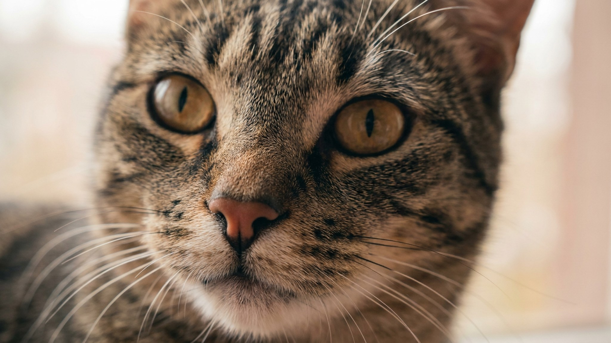

7 вещей, которые питомцы проглатывают чаще всего — и как закрыть доступ

4 июля 2026 · 3 минуты чтения · Быт · Безопасность · Кошки и собаки
Каждый третий экстренный визит к ветеринару — проглоченный посторонний предмет. Нитка, носок, мишура, батарейка — вещи, которые есть в каждом доме, и именно они чаще всего оказываются в желудке питомца. Разбираем семь категорий риска и конкретные меры, которые реально работают.
Что чаще всего оказывается в желудке
Статистика ветеринарных клиник по инородным телам у кошек и собак устойчива из года в год. Вот семь категорий, которые встречаются чаще всего:
- Нитки, резинки, верёвочки. Кошки — главные любители. Длинный гибкий предмет проходит часть пути, а потом фиксируется за основание языка или в кишечнике. Тянуть за торчащую нитку нельзя — только к врачу.
- Носки и нижнее бельё. Запах хозяина — главный аттрактант для собак. Небольшие носки могут пройти через ЖКТ, но крупные — нет. Лабрадоры и бигли в лидерах по этой «специализации».
- Мишура и новогодние украшения. Блестящее движение привлекает кошек. Мишура работает как нитка — опасна линейной формой.
- Детали игрушек и пищалки. Откушенные глаза у мягких игрушек, пищащие капсулы, колёсики от машинок. Регулярно проверяйте игрушки на целостность.
- Трубчатые кости. Варёные и запечённые кости расщепляются на острые осколки. Сырые мясные — менее опасны, но тоже под контролем.
- Батарейки и магниты. Отдельная категория высокой опасности. Батарейка, особенно дисковая, вызывает химическое повреждение слизистой уже за несколько часов. Два магнита, проглоченных по отдельности, притягиваются сквозь стенку кишки — это требует немедленной помощи врача.
- Средства бытовой химии. Таблетки для посудомойки, капсулы для стирки, гранулы против насекомых — яркие, иногда пахнущие и доступные. Особенно опасны для щенков.
Pet-proofing: как обезопасить квартиру
Принцип тот же, что при защите жилья для ребёнка: убрать то, что лежит на уровне носа питомца, и закрыть доступ туда, где хранится опасное.
- Нитки, резинки, бельё — в закрытые ящики и корзины с крышкой, не на полу и не на краю кресла.
- Мелкие детали, батарейки, магниты — в закрытые контейнеры, вне досягаемости. Дисковые батарейки из пультов — отдельный контроль.
- Бытовую химию — в закрытый шкаф под замком или на недоступной высоте. Животные умеют открывать незафиксированные дверцы.
- Игрушки питомца — регулярная проверка. Оторванные детали убирайте сразу.
- Мусорное ведро — с крышкой. Кости от ужина, нитки от мяса, фольга — всё привлекательно для собаки.
- Новогодние украшения и гирлянды — в период праздников убирать, когда питомец в комнате без присмотра.
Тревожные сигналы: когда не ждать
Если питомец проглотил что-то подозрительное или вы видите один из следующих признаков — не наблюдайте дома, сразу к ветеринару:
- Рвота, которая повторяется несколько раз подряд, особенно без еды.
- Отказ от еды и воды более 6–8 часов без очевидной причины.
- Вздутый или болезненный при прощупывании живот.
- Вялость, слабость, необычная поза — согнутая спина, поджатый живот.
- Кашель, затруднённое глотание, слюнотечение.
- Торчащий из прямой кишки предмет или нитка — не тяните, в клинику.
Перечисленные сигналы — повод ехать немедленно, а не ждать до утра. Чем раньше врач увидит питомца, тем шире выбор возможных решений.
🐾 Первая помощь — всегда под рукой
AnimaLife подскажет, что делать в тревожной ситуации с питомцем ещё до визита к врачу. Откройте в один тап.
Открыть AnimaLife → Открыть в MAX →
🐾 Понравился разбор?
Подпишитесь на канал — каждый день разбираем по одному тревожному симптому у кошек и собак: что в пределах нормы, а когда пора к врачу. Подпишитесь, чтобы не пропустить разбор, который может спасти здоровье вашего питомца.
Материал носит информационный характер и не заменяет очную консультацию ветеринара.
← Все статьи · Открыть AnimaLife в Telegram · RSS